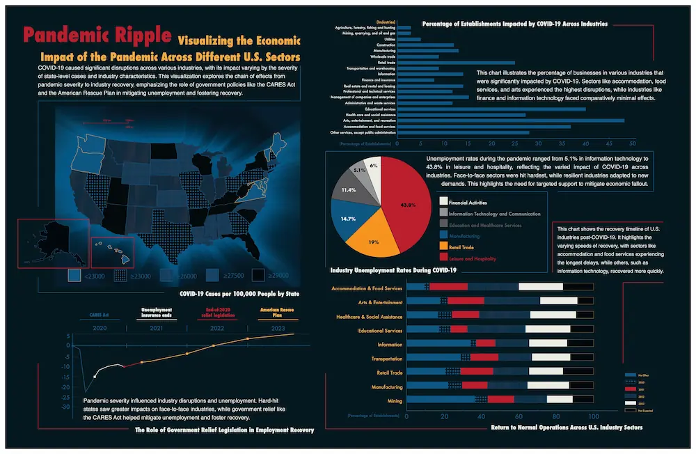
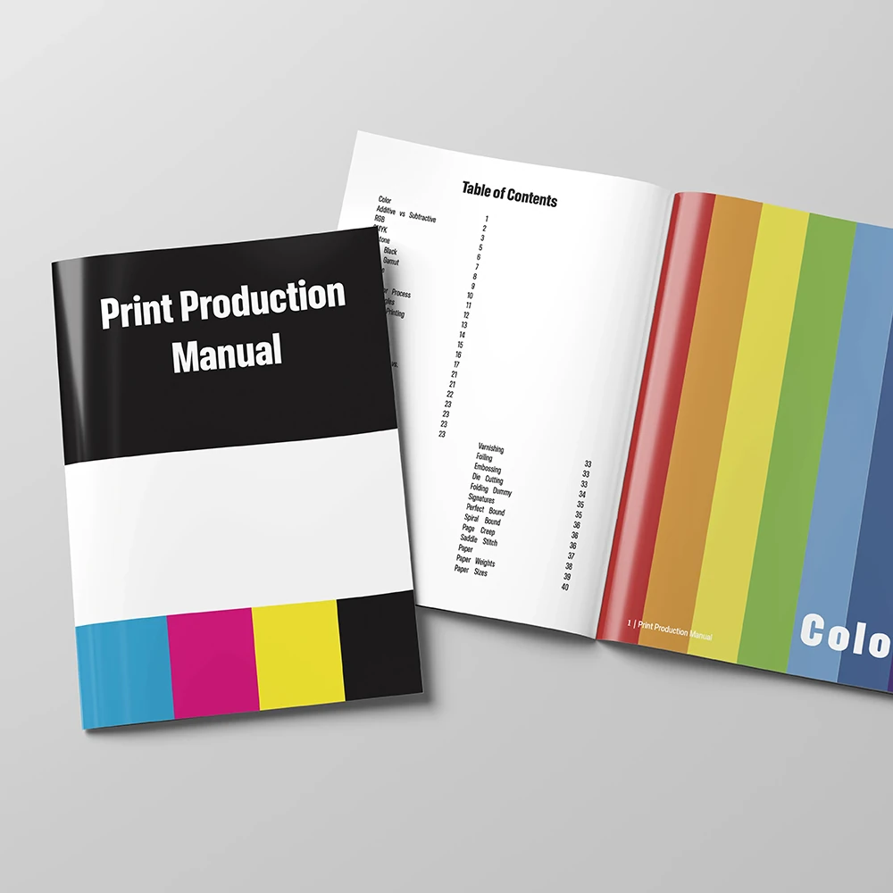

Case Studies & Projects
A collection of UX/UI, web, branding, information design, and visual communication projects focused on clarity, structure, responsive experiences, and meaningful design.

Brand • Web • Event Communication
Asian Arts New York
A cultural communication system for branding, website structure, event promotion, and print materials.

Nonprofit • UX Structure • Web
WAADA
A nonprofit arts website focused on content organization, event presentation, responsive layout, and maintenance.

UX/UI • Education • Brand
Yuting Learning
An education website concept using UX research, brand foundation, sitemap planning, and responsive interface design.

Information Design • Visual Storytelling
Information Design
A visual storytelling project exploring hierarchy, structure, data, and narrative for clearer understanding.

Graphic Design • Print Layout
Printing Design
Print-focused design work emphasizing layout clarity, typography, and consistent visual communication.

Brand Concept • Packaging
EcoYummy
A sustainable product concept combining branding, packaging communication, nutrition information, and market positioning.